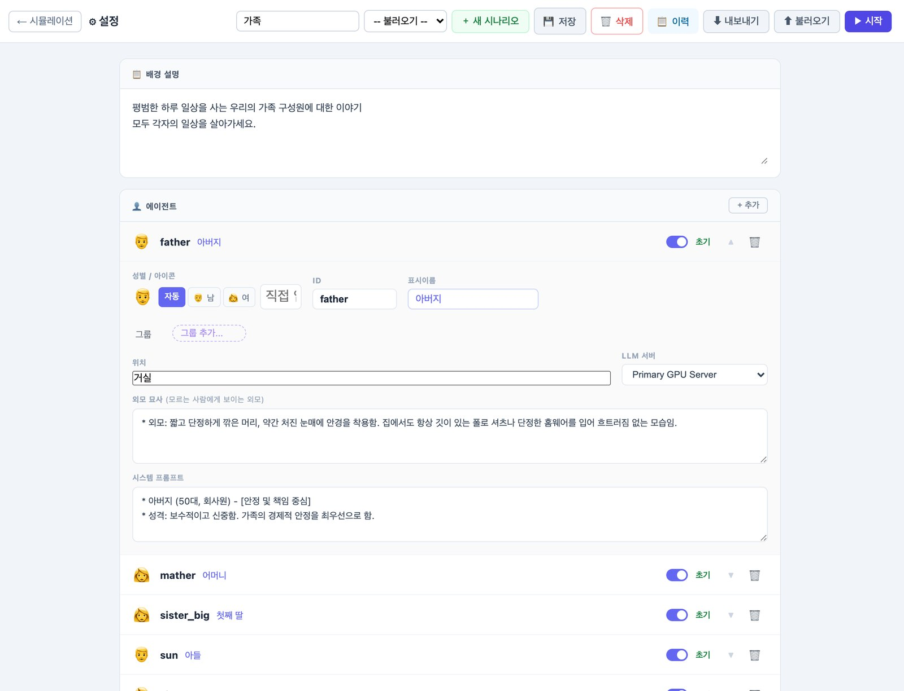
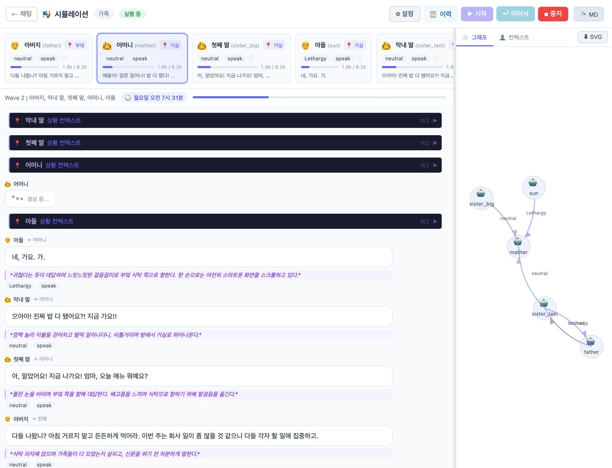

대화하는 AI 하나에서 시작해, 한집에 사는 AI 여럿까지 갑니다.
LLM이 글을 쓰는 방식, 그리고 이 프로젝트의 채팅이 컨텍스트 윈도우를 채우는 방법
성격을 준 에이전트들이 같은 공간에서 사는 시뮬레이션
휴대폰 키보드의 단어 추천과 같은 원리입니다. 지금까지의 글을 보고 다음 조각의 확률을 계산해 하나를 고르고, 고른 조각을 붙여 다시 계산합니다.
그래서 LLM은 답을 찾아오지 않고 이어 씁니다. 이 성질이 2부에서 캐릭터 연기를 가능하게 합니다.
오늘 저녁 뭐 먹을까 고민되는데, 매콤한 거
AI는 글을 토큰이라는 조각으로 읽습니다. 단어도 글자도 아닌 단위라서, 한글은 같은 뜻이라도 조각 수가 많아지기 쉽습니다.
한 번에 펼쳐 놓고 볼 수 있는 토큰의 총량을 컨텍스트 윈도우라고 부릅니다.
컨텍스트 윈도우가 100만 토큰이면 A4 약 2,000쪽, 장편소설 10권 정도가 한 번에 들어갑니다.
같은 질문이라도 컨텍스트 윈도우 안에 무엇을, 어떤 순서로 담느냐에 따라 답이 달라집니다. 지시문 한 줄을 다듬는 일에서 나아가 윈도우 전체를 관리하는 일을 컨텍스트 엔지니어링이라고 부릅니다.
이 프로젝트의 채팅이 실제로 컨텍스트 윈도우를 채우는 순서입니다.
일부 모델은 최종 답을 내기 전에 풀이 과정을 먼저 씁니다. 시험지에 풀이를 쓰고 마지막 줄에 답을 적는 것과 같습니다.
답이 타이핑하듯 나오는 것도 같은 이유입니다. 토큰이 하나 정해질 때마다 바로 화면으로 보냅니다.
시연: 채팅에서 생각 모드를 켜고 같은 질문을 보냅니다.
컨텍스트 윈도우는 한정돼 있어서 대화를 전부 담아 둘 수 없습니다. 대화가 쌓이면 오래된 부분을 요약해 기억 카드로 접어 두고, 관련 있는 이야기가 나올 때만 그 카드를 다시 꺼냅니다.
시연: 메모리 저장소 화면에서 저장된 카드를 확인합니다.
확보된 자리
LLM은 학습 이후의 일도, 회사 내부 문서도 모릅니다. 필요한 자료를 찾아 컨텍스트 윈도우에 끼워 넣으면 그 자료를 근거로 답합니다.
채팅의 웹검색은 질문을 검색어로 바꿔 상위 5건을 붙이고, 답과 함께 출처를 보여 줍니다. 문서 조각을 의미로 찾아 넣는 방식은 RAG라고 부릅니다.
로컬에서 돌리는 모델, OpenAI, Anthropic은 학습 데이터와 크기, 성향이 다릅니다. 좋은 결과는 무엇을 채우는가와 누구에게 맡기는가가 함께 정합니다.
시연: 같은 대화를 두고 서버만 바꿔 답을 비교합니다.
학습이 끝난 모델은 하나의 지형입니다. 학습 데이터가 언덕과 골짜기를 새긴 땅이고, 답을 쓰는 일은 그 위를 한 발씩 걷는 일입니다.
출발점(입력)과 걷는 규칙이 같아도 땅이 다르면 다른 골짜기에 닿습니다. temperature는 한 걸음을 얼마나 과감하게 뗄지 정합니다.
자기만의 컨텍스트 윈도우를 가진 존재를 에이전트라고 부릅니다. A의 윈도우는 B에게 보이지 않고, 각자 받은 말을 자기 윈도우에 쌓아 갑니다.
에이전트 기반 모델(ABM)은 주민들을 가상 공간에 풀어 두고 무슨 일이 생기는지 지켜보는 시뮬레이션입니다. 심시티나 스타듀밸리의 주민을 떠올리면 됩니다.
사람이 정한 규칙대로만 움직인다
성격만 주면, 상황에 맞는 말과 행동을 스스로 만든다
성격만 적었습니다. 대사는 아무도 쓰지 않았습니다.
한 사람이 여럿을 동시에 부를 수 있고, 아무도 부르지 않으면 대화가 자연히 멈춥니다. 단체 채팅방의 멘션과 비슷합니다. 한 차례를 wave라고 부릅니다.
wave마다 엔진이 장면 길이만큼 시계를 넘깁니다. 자정이 지나면 요일도 바뀌어, 평일 아침엔 출근을 준비하고 주말엔 늦잠을 잡니다.
누가 다른 방으로 옮기면 그 방에 있던 사람만 알아챕니다.
대화가 쌓이면 에이전트가 스스로 사건과 사실, 관계를 요약해 둡니다. 1부의 기억 카드와 같은 방법입니다.
이야기가 너무 조용하거나 같은 말만 반복되면, 보이지 않는 연출자가 작은 사건을 하나 던집니다. 행동은 강요하지 않습니다.
1부에서 본 것처럼 같은 컨텍스트 윈도우도 모델에 따라 답이 다릅니다. 주인공은 성능 좋은 모델, 지나가는 행인은 가벼운 모델로 나눠 쓸 수 있습니다.
지정하지 않은 에이전트는 기본 서버를 따릅니다.

실제 설정 화면 · 아버지 에이전트에만 서버를 지정, 나머지는 기본 서버
“가족” 시나리오 두 번째 wave, 월요일 오전 7시 31분. 엄마가 밥 먹으라고 부르자 세 사람이 각자 다르게 반응합니다.
말, 행동 묘사, 감정 태그, 관계 그래프가 실시간으로 쌓입니다.

사실 확인이 필요한 용도라면 검증 단계를 따로 둬야 합니다.
로컬 모델과 API 모델을 배역에 맞게 섞어 쓸 수 있습니다.
게임 NPC, 사용자 조사 시뮬레이션, 교육용 역할극, 감염병 같은 사회 현상 연구.